タクシー売上日報 図解マニュアル
このページは読むだけのマニュアルです。書き換えはできません（内容の直しはClaudeが行います）。青い字を押すと、その場所へ移ります。
目次（押すとその章へ）
このマニュアルは、実際の画面に赤い番号を付けて説明します。上から順に見ていけば、1日分の操作がひととおりわかります。
アプリとの行き来 アプリの右上の［？ マニュアル］を押すと、3つのマニュアルと、いま開いている画面の説明が出ます。説明を押すと、このマニュアルがその章の見出しで開きます。アプリに戻るときは、左上の［‹ 戻る］を押します（iPhoneのホーム画面の版から開いたときは「完了」）。マニュアルの画面のいちばん上の「AIに聞く」に質問を打って「聞く」を押すと、近い章へのボタンが出ます。Claude版と、設定でGeminiのキー（無料）を入れた単体版では、AIがマニュアルをもとに答えます（くわしく）。
0. 日報の画面
いちばん使う「日報」の画面です。いちばん下の 8 と 9 だけ覚えれば、ほかのボタンを探さなくても記録できます。

- 画面の切り替え 日報・一覧・月集計・年集計・地図・設定。右上の［？ マニュアル］で、いま開いている画面の説明を開ける
- 日付 ‹ › で前後の日へ
- 営収 その日の売上と回数。黒い帯に黄色の数字。目標を決めていれば、目標までの残りも出る
- 乗務のカード 出庫前・乗務中・帰庫済みと、出庫の時刻とメーター、拘束時間（上限が近づくと黄色、超えると赤）
- いまの状態 太い線で囲んだ札と、次にすること
- メーター 空車中は乗車時メーターの欄だけ（下3桁でよい）。設定が「乗車・降車のたび」のときだけ出る
- 文字で入れる・料金から入れる ふだんたたんである料金や「話した内容」の欄を開く
- 次に押すボタン 出庫 → 乗車 → 降車 → 料金へ と順に変わる。上の小さい字は、いまの状態
- 休憩・話す 押せないときは薄くなる。帰庫は、話すの隣で押し間違えないように④のカードに置いている。画面の小さいiPhone（SE・8）では、休憩｜乗車｜話す が1列に並ぶ
状態ごとの下のボタン
下の大きいボタンは、いまの状態に合わせて文字と色が変わります。押せない小さいボタンは薄くなります。
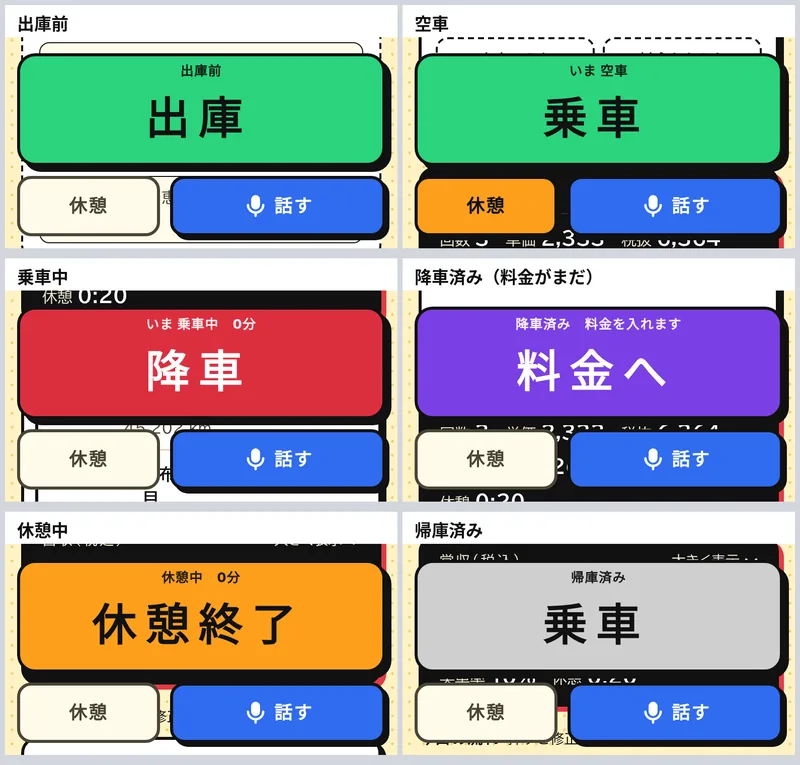
| いま | 大きいボタン | 押すと |
|---|---|---|
| 出庫前 | 出庫（緑） | 出庫メーターを聞かれる |
| 空車 | 乗車（緑） | 乗車地と時刻が入る |
| 乗車中 | 降車（赤） | 降車地と時刻が入る |
| 降車済み | 料金へ（紫） | 料金の数字キーが開く |
| 休憩中 | 休憩終了（だいだい色） | 休憩が終わる |
| 帰庫済み | 乗車（灰色） | 「この日報は帰庫済みです」と確認が出る |
1. 1日の流れ
出庫から帰庫までのあいだ、乗車から記録までをお客様ごとにくり返します。押すボタンも話す言葉も、この順番です。
あいだに休憩→帰庫
| 場面 | ボタンで | 声で |
|---|---|---|
| 出庫した | 下の「出庫」→ メーター（全部の桁） | 「出庫 45230」 |
| 乗せた | 下の「乗車」（「乗車・降車のたび」の設定なら → メーター） | 「乗車 230」 |
| 降ろした | 下の「降車」→ 料金（「乗車・降車のたび」の設定なら先にメーター） | 「降車 236 2400円 カード」 |
| 記録する | 数字キーの右の支払方法（押すと記録） | 「はい」 |
| 休む | 下の［休憩］→「休憩終了」 | 「休憩」「休憩終わり」 |
| 帰庫した | 「乗務中」の［帰庫］ → メーター → メーターの集計を写す | 「帰庫 290」 |
出庫メーターは、毎回全部の桁を入れます（乗務ごとに車が変わることがあるため）。その日の帰庫や乗車・降車のメーターは、下3桁で入れればその日の出庫メーターから補います。
2. ボタンで1件を記録する
画面のいちばん下の大きなボタンを、出てくる順に押していくだけです。数字は、画面の下に出る大きな数字キーで入れます。
① 乗せたら「乗車」
緑の「乗車」を押すと、乗車地と時刻が自動で入ります。設定が「乗車・降車のたび」のときは数字キーが開くので、メーターの下3桁を入れます。3桁目で自動で閉じるので、ふだんは「確定」を押す必要はありません。はじめの設定（出庫・帰庫のときだけ）では、数字キーは開きません。
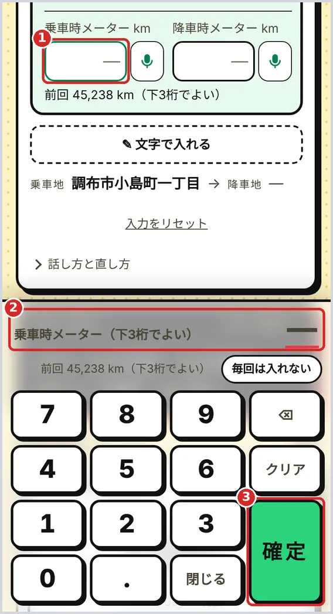
- 入れている欄（乗車時メーター）
- 入れた数字と、補った全部の桁
- 「確定」。前回から大きく離れているときや、全部の桁を打つときに押す
上の図は「乗車・降車のたび」の設定のときの画面です。数字キーの右上の「毎回は入れない」を押すと、「出庫・帰庫のときだけ」に戻ります。前回から大きく離れた数字を入れると、赤字で「離れすぎていませんか？」と出ます。下3桁の打ち間違いなので、数字を確かめます。
② 降ろしたら「降車」、料金、支払い
下のボタンは赤い「降車」に変わっています。押すと料金の数字キーが開きます（「乗車・降車のたび」の設定では、先に降車メーターを3桁入れます）。料金は「24」「00」で ¥2,400 になります。料金の数字キーには「確定」がなく、右の列が支払方法です。支払いを押すと、料金が決まってそのまま記録されます。
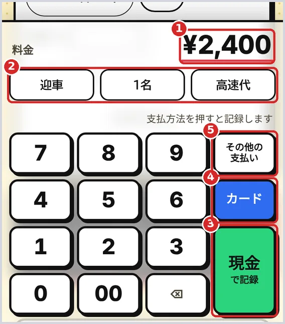
- 料金の表示
- 迎車・人数・高速代（下の③）
- いちばんよく使う支払い。押すとそのまま記録
- 2番目によく使う支払い
- 「その他の支払い」。電子マネー・QR決済・チケットと、配車アプリ（GO・Uber・DiDi・S.RIDE）から選ぶ。「料金に戻る」「記録せずに閉じる」もここ
③ 2名・迎車・高速代は、支払いの前に
料金の数字キーのいちばん上の段で入れます。数字キーに隠れないので、画面を動かさずに押せます。
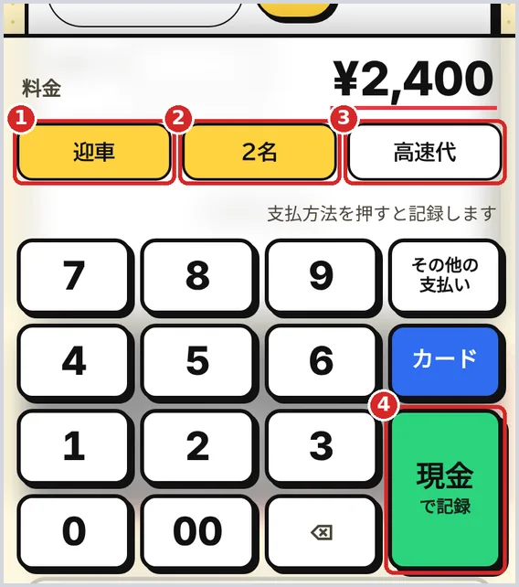
- 迎車（押すと黄色。もう一度押すと消える）
- 人数（押すたびに 1名→2名→…→5名→1名）
- 高速代（押すと高速代の数字キー。「確定」で料金の数字キーに戻る。料金には入れない）
- 最後に支払いを押すと、まとめて記録
いまの版では、高速代の右に［メモ］もあります（図は前の版）。押すとメモの画面が開き、書いて「保存」を押すと、支払いを押したときに一緒に記録されます。記録したあとなら、画面の上の「記録しました」の「メモ」でも書けます。声なら「メモ ○○」です。
3. 声で記録する
いちばん下の真ん中の［話す］を押して、ひとこと言います。足りないものはアプリが声で聞いてきます。
① 話す
押すとすぐ聞き取りが始まり、話している言葉が大きく出ます。話し終わると約2秒で自動で止まります。
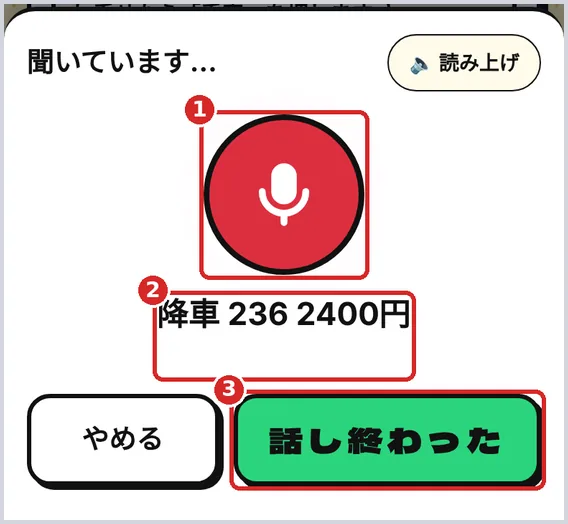
- 聞いているあいだは赤いマイク
- 話している言葉
- すぐ止めたいときは「話し終わった」
② 聞いて、見て、「はい」
聞き取った内容が大きく出て、「2400円、カード。記録しますか」と読み上げます。「はい」と言うか「これで記録」を押します。
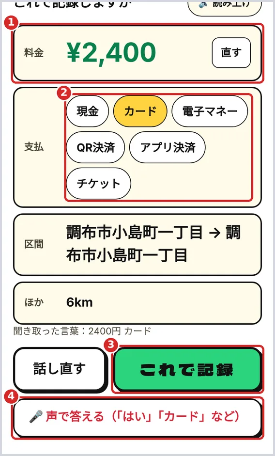
- 料金（違うときは「直す」）
- 支払方法（その場で押して変えられる）
- 「これで記録」
- 声で答える（「はい」「カード」「3000円」など）
③ 足りないときは聞かれる
「降車」とだけ言うと、「降車メーターは？」「料金は？」「支払いは？」と順に聞かれます。そのまま答えます。聞き取りが始まらないときは「🎤 答える」を押してから答えます。
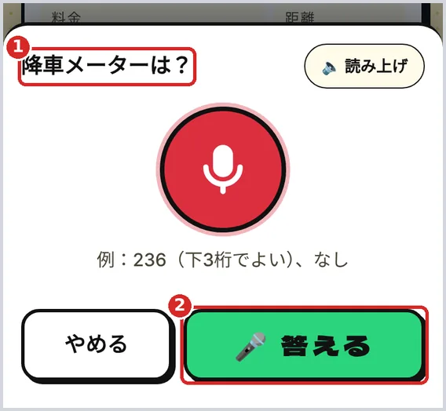
- アプリからの質問
- 「🎤 答える」
| 言いたいこと | 話す例 |
|---|---|
| 記録してよい | 「はい」「記録」 |
| 支払・料金を直す | 「カード」「3000円」 |
| メーターを入れない | 「なし」 |
| やめる | 「いいえ」「やめる」 |
| 直前の記録を直す | 「さっきのはカード」「取り消し」 |
| メモを残す | 「メモ 次回も予約したい」 |
④ 走ると画面が変わる
乗務中に車が走りだすと、画面が大きく簡単になります（GPSの速さで判断。iPhoneのホーム画面の版だけ）。走行中に画面を見続けたり操作したりすることは、法律で禁じられています。止まると、いつもの画面に戻ります。
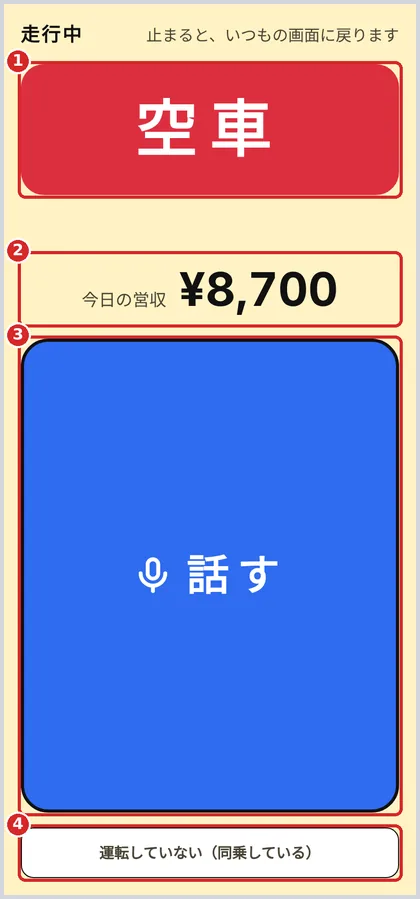
- いまの状態 空車・乗車中・休憩中を、大きな札で
- 今日の営収
- 話す 走行中に使えるのはこれだけ。声で記録し、結果は読み上げで確かめる
- 運転していない 同乗しているときだけ。押すと、15分はこの画面を出さない
打ちかけの料金などは消えずに残っていて、止まってから続きを入れられます。いつもの画面のままにしたいときは、設定の「走行中の画面」で切り替えます。
4. 記録前の確認
入れ忘れがあると、記録する前に「記録前の確認」が出ます。黄色の ⚠ を押すと、その欄へ移って直せます。漏れがなければ、この画面は出ずにすぐ記録されます。
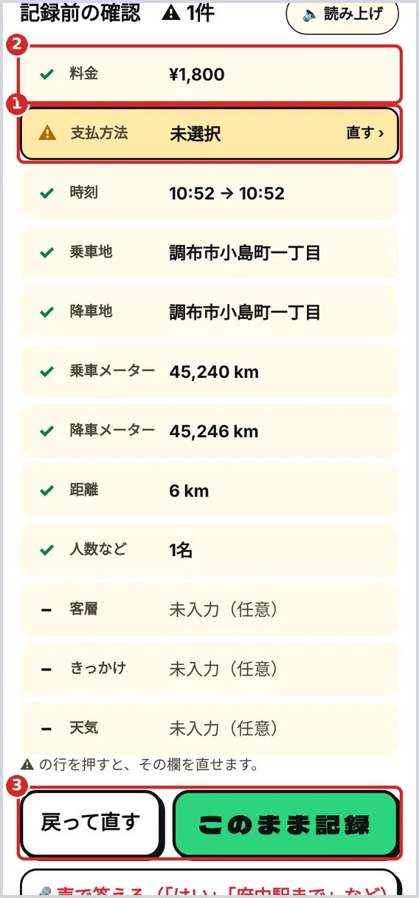
- ⚠ 入っていない、またはおかしい項目。押すと直せる
- ✓ 入っている項目。－ は任意で、空でもかまわない
- 「戻って直す」または「このまま記録」
5. 今日の流れと直し方
日報の画面の下の方には、その日の動きが上から時刻の順に並びます。行を押すと、その記録を直せます。
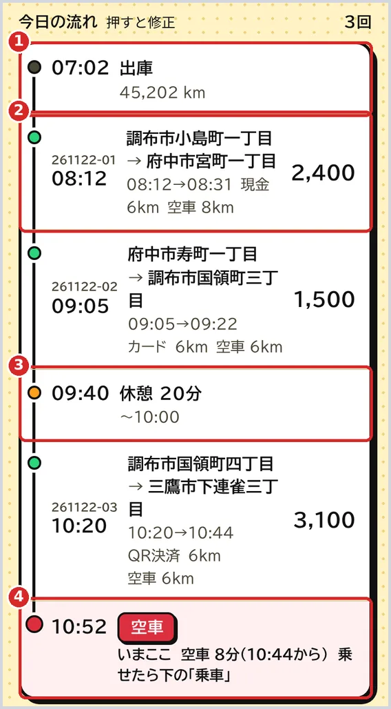
- 出庫 押すと「乗務情報・目標」で時刻やメーターを直せる
- 乗車 押すとその記録の修正画面が開く
- 休憩 押すと休憩の時刻を直せる
- いまここ いまの状態。空車なら空車の時間が出る（1時間を超えると「1時間20分」のように出る）。3時間を超えると「帰庫を忘れていませんか？」と出る。帰庫すると、いちばん下は「帰庫」になる
修正画面
乗車の行を押すと開きます。直したら「保存」を押します。
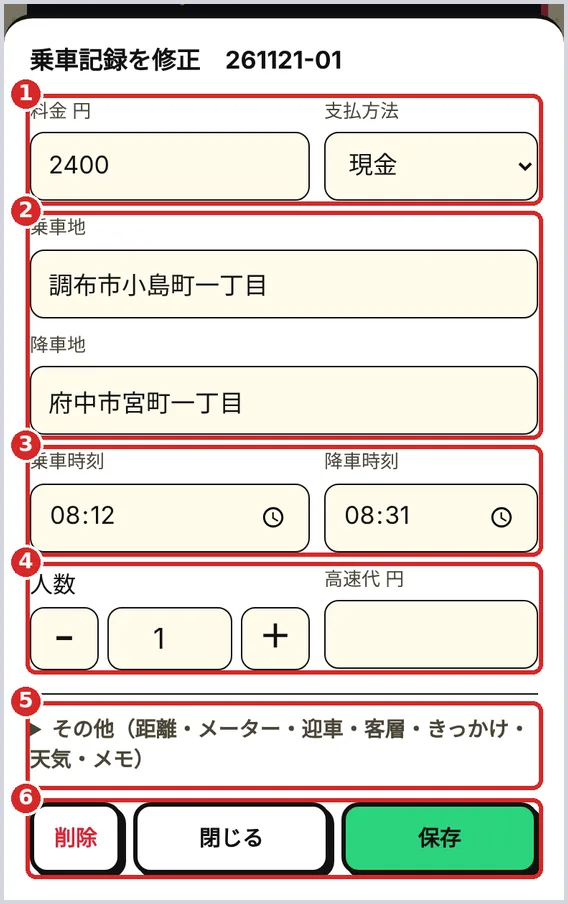
- 料金と支払方法
- 乗車地と降車地
- 乗車時刻と降車時刻
- 人数（［−］［＋］）と高速代
- 「その他」。距離・メーター・迎車・客層・きっかけ・天気・メモが開く。客層が訪日客なら、話していた言葉・地域・旅の形・支払い・やり取りの欄も出る
- 「削除」（2回押す）・「閉じる」・「保存」
| こんなとき | こうする |
|---|---|
| 記録した直後 | 画面の上に出る「取り消す」を2回（1回目は確認）。直すだけなら「直す」 |
| 直前の記録を声で直す | 「さっきのはカード」→「はい」か「修正する」 |
| 前の記録を直す | 「今日の流れ」でその行を押す → 直して「保存」 |
| 「乗車」「降車」を押し間違えた | 状態の札の下の「取り消す」 |
| 乗車を続けて2回押した | 2秒以内の2回目は自動で無視される |
| 帰庫したあとに乗せた | 「乗車」→「帰庫を取り消して乗車」 |
6. 帰庫したら
上の「乗務中」のカードの［帰庫］を押して帰庫メーターを入れると、その日の日報が自動で開きます。タクシーメーターの集計を写して、上から順に確かめます。
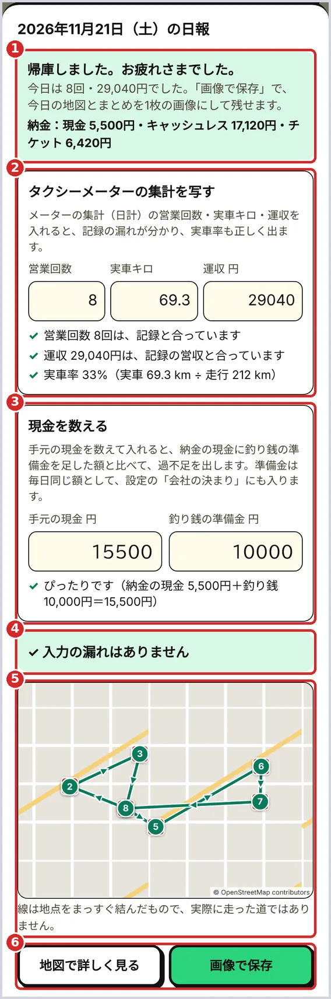
- 今日の回数と営収、納金（現金・キャッシュレス・チケット）
- タクシーメーターの集計を写す。メーターの集計（日計）の営業回数・実車キロ・運収を入れると、記録と比べて ✓ か ⚠ が出る。実車率もここで出る
- 現金を数える。手元の現金を入れると、納金の現金＋釣り銭の準備金と比べて過不足が出る。準備金は右の欄で入れられ、設定にも入る（毎日同じ額）
- 1日の点検。漏れがあれば黄色で一覧になり、行を押すと直せる。「チケットの会社名がない」「記録が1回少ない（記録漏れ）」などもここに出る
- 1日の順路の地図（緑の丸＝乗車地、赤い四角＝降車地、数字＝乗せた順）
- 「画像で保存」。共有の画面で「画像を保存」を選ぶと、写真に1枚で残る
画像には、日付・営収などの数字・順路の地図・乗車ごとの内容が入ります。
日報は乗務記録と同じ並び
地図の下は、会社の乗務記録と同じ順に並んでいます。用紙に写すときは、上から順に読めば済みます。
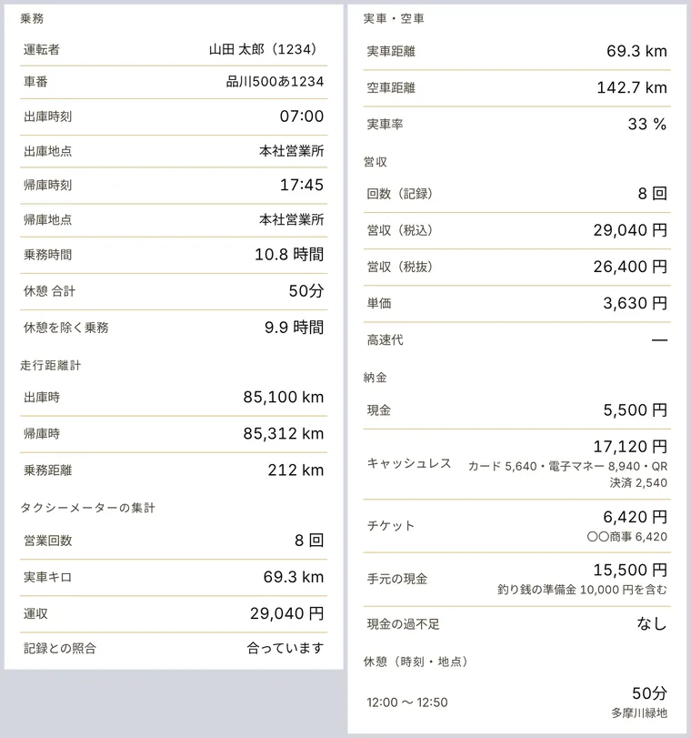
いちばん上には運転者（氏名・乗務員番号。設定で入れる）と車番が出ます。出庫地点・帰庫地点・休憩の地点は、単体版では押した場所から自動で入ります。Claude版では「乗務情報・目標」で入れます。納金に高速代を入れるかは、「設定」の「納金に高速代を」で選びます（はじめは「含めない」）。
7. 振り返りの画面
上のボタンで切り替えます。どの画面も ‹ › で前後の日・月・年に移ります。
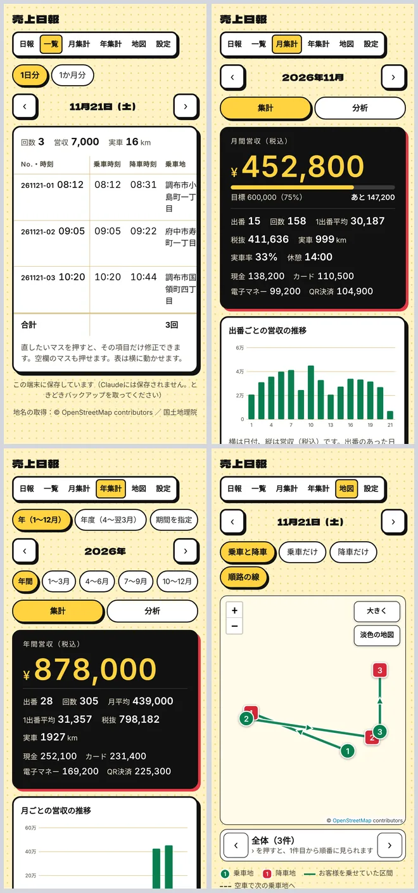
| 画面 | 見られるもの | こんなときに |
|---|---|---|
| 一覧（左上） | 1日分・1か月分の表。マスを押して直せる | 会社の日報に写す、まとめて直す |
| 月集計（右上） | 月の営収・目標までの残り・出番ごとの推移 | 月の成績を見る |
| 年集計（左下） | 年・年度・好きな期間の営収と月ごとの推移 | 1年を振り返る |
| 地図（右下） | その日の乗車地・降車地と順路 | どこを走ったか確かめる |
地図では、下の › と1件ずつ順に見られ、「全体」で全部の表示に戻ります。緑の実線はお客様を乗せて走った区間、灰色の点線は空車で移った区間です。GPS記録アプリのGPXを「走った道を読み込む（GPX）」で読み込むと、実際に走った道（緑＝実車、灰色＝空車）と、それぞれの距離が出ます（使い方マニュアル「地図」）。
月集計は、設定で給与の締め日を選ぶとその期間（20日締めなら「11月分 10/21〜11/20」）になります。歩率や足切りを入れると給料の見込みと足切りまでの残り、歩率の段階を入れると次の段階までの額も出ます。何も入れていないときは「締め日・給与の計算を設定」のボタンから入れられます。
前年・複数年と比べる
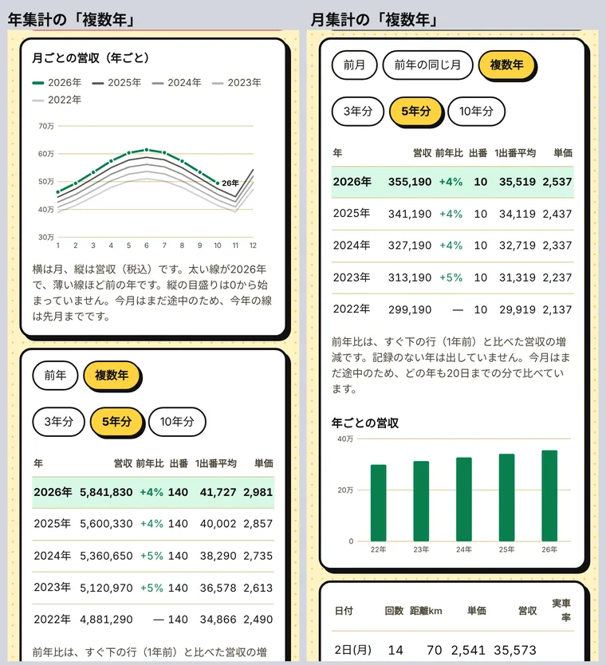
- 比較のカードの上のボタンで、比べる相手を選ぶ。
- 月集計: 前月／前年の同じ月／複数年
- 年集計（年・年度）: 前年（前年度）／複数年
- 年集計（期間を指定）: 直前の期間／前年の同じ期間／複数年
- 「複数年」では「3年分」「5年分」「10年分」から選ぶ。年ごとの営収・前年比・出番・1出番平均・単価が、新しい順に並ぶ。
-
前年比は、1年前の行と比べた営収の増減。
-
今の月や年がまだ途中のときは、どの年も今日と同じ日までの分で比べる。
- 年集計の折れ線グラフは新しい5年分。今年の線は先月まで。
- 選んだ比べ方は次に開いたときも残る。
- 前の年の記録がないうちは「比べる年がありません」と出る。
記録が期間の途中からの年（使い始めた年など）には、年の横に小さく「＊」が付く。その年の前年比は参考程度に。
分析で振り返る
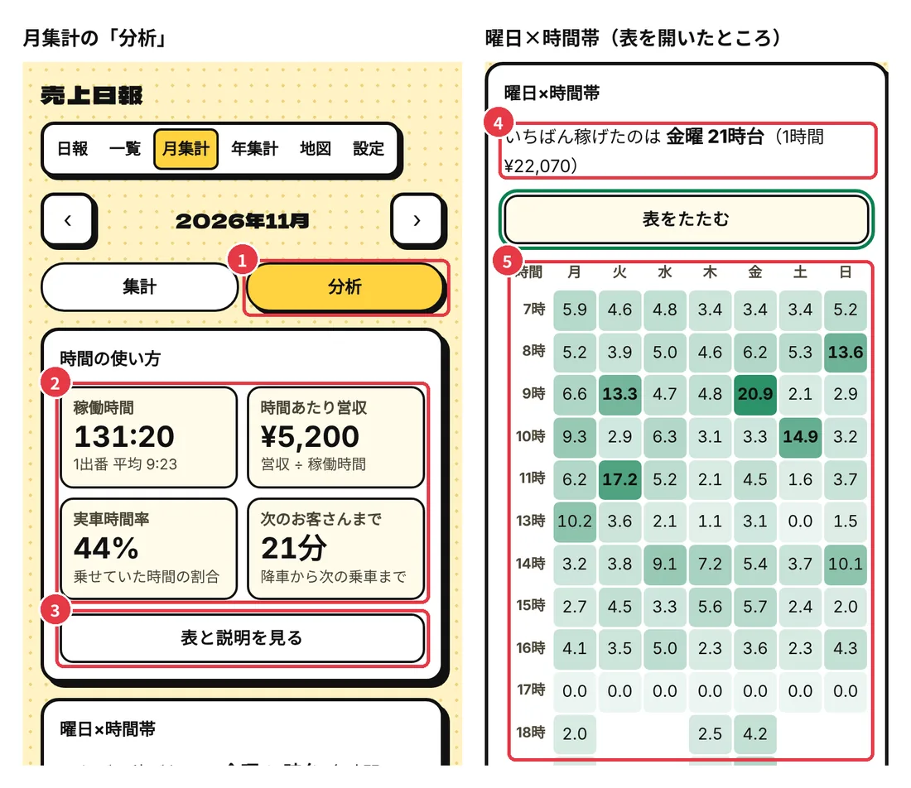
- 月集計か年集計で、いちばん上の「分析」を押す（①）。期間は、その画面で選んでいる月・年・四半期・年度・期間のまま。
- 時間の使い方は、稼働時間・時間あたり営収・実車時間率・次のお客さんまでの4つの数字がいつも見える（②）。
- ほかの項目は、はじめは要点だけ（④）。表と説明は「表と説明を見る」を押すと開く（③）。
- 曜日×時間帯の表（⑤）は、色が濃いほど稼げた時間。数字は1時間あたりの営収（千円）。
-
分析のいちばん下に「訪日客」（言葉・地域・旅の形などごとの回数と単価、前の年の同じ月との比べ）と「乗せた場所・行き先の種類」（駅・ホテル・空港などに自動で分けたもの）がある。
-
開いた項目は、次に開いたときも開いたまま。「表をたたむ」で閉じる。
- 時間を使う数字は、出庫と帰庫の時刻が両方入った日だけで出す。帰庫の押し忘れに注意。
- 良い日・悪い日の日付を押すと、その日の日報が開く。
- 乗車した地点の地図は、単体版で場所の表を開いたときに出る。
8. 設定
上の「設定」で、画面の明るさを選んだり、記録を守ったりします。バックアップは月に1回取ってください。
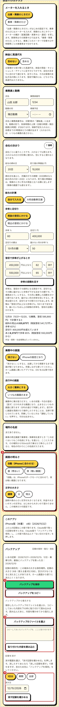
- 画面の明るさ 自動（iPhoneに合わせる）・昼・夜から選ぶ
- バックアップを保存 共有メニューの「ファイルに保存」などで残す
- 復元する 保存したファイルを選ぶか、コピーした内容を貼り付けて読み込む
- 記録を消す 消す範囲を選んで「消す記録を確かめる」。消す前に必ずバックアップを取る
いちばん上の「メーターを入れるとき」では、メーターを出庫・帰庫のときだけにするか、乗車・降車のたびに入れるかを選びます。はじめは「出庫・帰庫のときだけ」で、実車キロ・実車率は帰庫のときに写すメーターの集計で出ます。前から乗車ごとにメーターを入れていた人は、「乗車・降車のたび」のままです。
2つ目の「納金に高速代を」では、お客様から受け取った高速代を納金に足すかを選びます。会社の決まりに合わせます。「含める」にすると、そのお客様の支払方法（現金・キャッシュレス・チケット）の側に足し、帰庫のカードに「（高速代 1,320円を含む）」のように出ます。営収や集計には、どちらでも高速代は入りません。
その下の「乗務員と勤務」では、氏名・乗務員番号、勤務の形（拘束時間の上限）、帰庫予定（目標までのペース）を入れます。「会社の決まり」は次の図のとおりです。「乗務中の画面」を「消さない」にすると、乗務中に画面が暗くなりません。「場所の名前」には、修正画面で名前を付けた場所が並びます。
「乗務中の画面」の「走行中の画面」で、走ると画面を大きく簡単にするかを選びます（3章）。「文字の大きさ」で、説明や表の文字を「大」「特大」にできます。「このアプリ」には版の名前と番号が出ます。iPhoneのホーム画面の版が本番で、Claude版は試し用です（題名の横に「試し用」と出ます）。Claude版で取った記録は、Claude版で「バックアップを保存」し、iPhone版で③から読み込んで「ない日だけ足す」を押すと、iPhone版の記録を変えずに移せます。バックアップのところには、記録の保存先と大きさも出ます。
会社の決まり
締め日・釣り銭の準備金・歩率・足切りを、自分の会社に合わせて入れます。どれも入れなくても使え、入れたものだけが計算に使われます。月集計の「締め日・給与の計算を設定」を押しても、ここが開きます。
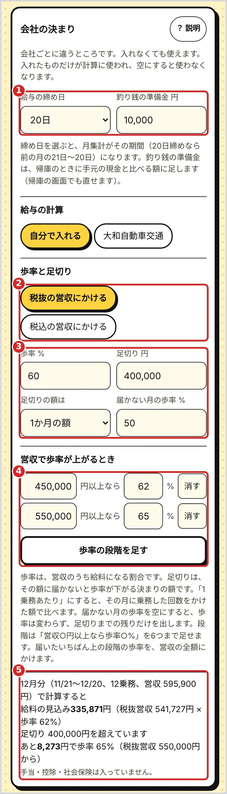
- 締め日と釣り銭の準備金 締め日で月集計の期間が変わる。準備金は帰庫の「現金を数える」でも直せる
- 税抜か税込か 歩率をかける営収を選ぶ。はじめは税抜
- 歩率と足切り 足切りを入れると、「1か月の額」か「1乗務あたり」かと、届かない月の歩率の欄が出る。届かない月の歩率を空にすると、歩率は変わらない
- 歩率の段階 「営収○円以上なら歩率○%」を6つまで。届いたいちばん上の段階の歩率を、営収の全額にかける
- 今月分で計算すると いまの記録での給料の見込み、足切りまでの残り、次の段階までの額。給与明細と比べて確かめる
大和自動車交通の給与で計算する 「給与の計算」で「大和自動車交通」を選ぶと、税抜か税込か・歩率と足切り・歩率の段階の欄は隠れます。採用の区分（試採用58%・本採用60%）と足切りの額（乗務ごとに足す・月405,000円）を選ぶと、月集計に「固定給198,873円 ＋（税抜営収 − 足切り）× 歩合率」の給料の見込みと、賞与の見込み（4か月分）が出ます。年集計には、その年の賞与3回分と年収の見込みが出ます。
給与保証 未経験で入社した人は、「給与保証」で勤務と交通圏（隔日・特別武三、隔日・北多摩、昼間・夜間）を選び、「保証が始まる月」を入れます。その12か月は、保証額と歩合で計算した額の高いほうが給料の見込みになります。給与明細の固定給が198,873円と違うときは、「固定給」の欄で直します。
昼と夜の画面
画面はマンガのようなコミック風です。「夜」を選ぶか、「自動」でiPhoneがダークモードのときは、暗い画面になります。
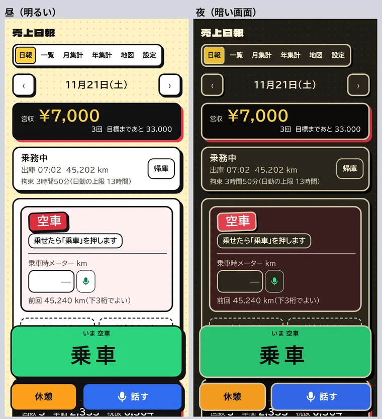
9. 困ったとき早見表
| こんなとき | こうする |
|---|---|
| 下の大きなボタンが見えない | 数字キーが開いている。メーターなら「確定」か「閉じる」、料金なら支払いを押すか「その他の支払い」→「記録せずに閉じる」 |
| 支払いを押しても記録されない | 料金が入っていない。先に料金を入れる |
| 下に［帰庫］がない | 帰庫は上の「乗務中」のカードの［帰庫］から。乗車中は、先に料金を記録してから |
| 話しても聞き取らない | マイクを「許可」にする。使えないときは、開いた「話した内容」の欄でキーボードのマイクを使う |
| 質問のあと聞き取りが始まらない | 「🎤 答える」を押してから答える |
| 読み上げがうるさい | 話す画面の右上「🔈 読み上げ」を押して消す |
| 乗車地に地名が入らない | 位置情報を許可する。圏外のときは場所を話して入れる |
| 昨日の日付が開いている | 入力欄の上の「今の日報へ」 |
| 営収の大きい数字が見えない | 営収のカードの「大きく表示」を押す |
| 夜に画面がまぶしい | 「設定」の「画面の明るさ」で「夜」か「自動」を選ぶ |
| アプリを更新したのに古い | アプリを完全に閉じて開き直す。これを2回 |
| 帰庫後に「記録漏れがあるかもしれません」 | メーターの営業回数が記録より多い。今日の流れで抜けた乗車を探し、料金だけでも記録する |
| 乗務中に画面が暗くなる | 設定の「乗務中の画面」を「消さない」にする（iOS 18.4以降） |
| 月集計の期間が会社の締めと違う | 設定の「給与の締め日」を会社の締め日にする |
| 給料の見込みが給与明細と合わない | 設定の「会社の決まり」を会社の決まりに合わせる（税抜か税込か・足切りの額の決め方・届かない月の歩率・段階） |
| 画面の上に赤い帯「記録を保存できませんでした」 | すぐ帯の「バックアップを保存」を押して記録を残す。iPhoneの空きを増やしてから開き直す |
| 止まっているのに走行中の画面のまま | 位置が届かない場所では、1分たつと戻る。すぐ戻すときは「運転していない」 |